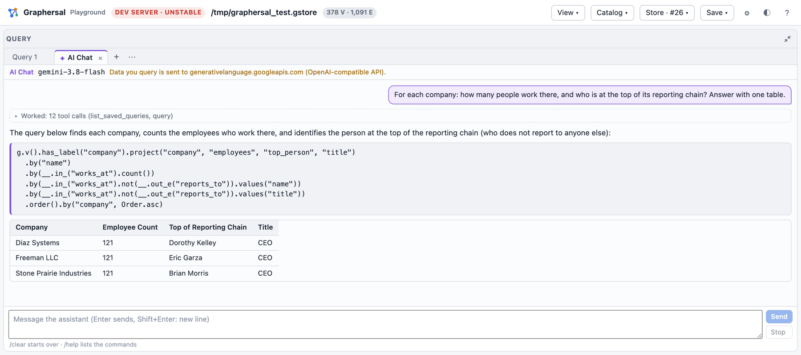

Dev Server, MCP and AI Chat
graphersal --server brings the playground UI to a graph on your disk. The browser talks to the
native engine in this process instead of WebAssembly, and the same process can open the graph to
AI agents.
DEV mode. The server is for local work: it listens on the loopback interface only, has no user accounts, and its HTTP API changes without notice.
The playground over your own graph
graphersal --graph people.json --server --port 8080 # open http://127.0.0.1:8080/
--graph takes everything the command line takes: a sample, a GraphSON or GraphML file (Save to
file writes it back), a snapshot, or a Store directory, whose commits are durable and whose
history (marks, points in time, forks, rollback, backups) is in the Store menu.
An AI agent on the same graph (MCP)
With --mcp the server also offers a Model Context Protocol
endpoint. An agent such as Claude Code then works with the same graph you see in the
browser: it runs queries, adds data and evolves the schema through MCP tools, and the page
reloads by itself when the agent changed something.
graphersal --graph modern --server --port 9000 --mcp
claude mcp add --transport http graphersal http://127.0.0.1:9000/mcp # then start a new `claude`

Ask the agent, for example:
- "Use the graphersal tools: who does marko know?"
- "Add a person ada, 36 years old, who knows marko." (the browser shows the new commit)
- "Infer the schema, store it in mode open and add an optional string property email to person."
The agent gets the tools query, the schema tools (get_schema, infer_schema, set_schema,
patch_schema, validate_schema, diff_schema, ...), statistics, graph_info, the saved
queries, the compression rules and the property indexes, plus the DSL reference as a resource. --mcp-read-only lets
it only read, --mcp-token requires a bearer token, and --mcp-query-tools offers every saved
query as a tool of its own.
AI Chat in the playground
EXPERIMENTAL. The configuration and the tab change without notice.
With --ai FILE the agent loop runs inside the server itself: the Query panel's + opens an
AI Chat tab where you ask questions in plain language. The server sends them to the LLM you
configured (Anthropic, OpenAI or an OpenAI-compatible endpoint such as Ollama), runs the tool
calls the model asks for on your graph and shows each step: the queries the agent ran, their
results, and its answer with tables and runnable queries.

export ANTHROPIC_API_KEY=... # the key stays in the server process
graphersal --graph modern --server --ai crates/graphersal-cli/examples/ai-anthropic.json
What the agent queries is sent to the provider you chose; the key never reaches the browser.
Every option, the configuration keys, the safety notes and what data leaves the machine are in Dev Server and MCP.